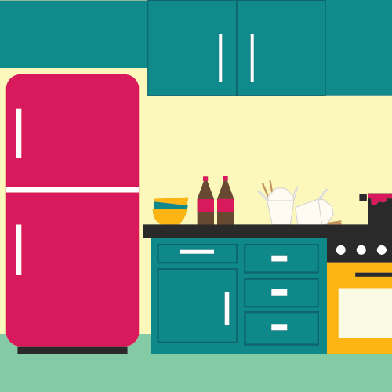
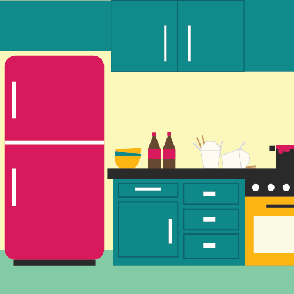

Hungry College Student is a falling objects game that chronicles the poor life decisions of my friend John. The goal of this game is the catch and eat all of the falling junk food while avoiding the vegetables. This game was created in Processing for my Programming Basics class. The full game below has been translated into Javascript using p5.js for web compatibility.
View the source code on my Github.
For this game, I wanted to create something reminiscent of the simple, 2D flash games I played when I was younger on sites like Neopets and AddictingGames. I also think Processing lends itself very well this style of game because of it's ability to easily render shapes and animations with user input.
My previous experience with Java was very useful in the development of this game. I was able to take advantage of the object-oriented nature of Java by representing the player, food, and game state as classes. This allowed me to handle the creation of food and collision in a more streamlined way.

As for the graphics, I wanted the theme of the game to be personal and relatable to my life. One of the first things I thought of was how college students are almost always hungry. My friend John and I also joke about his bad eating habits. Therefore, the theme I went was for in Hungry College Student was feeding John junk food and avoiding vegetables. Originally I wanted the junk food to be the specific foods that John would only eat, chicken tenders, buffalo blasters, and Frappuccinos, however I found that these foods didn't come across as clearly in a simple graphic, so I chose to go with more identifiable foods.

All of the images were created in Adobe Illustrator for an overall colorful, flat, graphic aesthetic. For the player sprite, I wanted something very simple, made of a few shapes, but still very expressive. After creating some sketches, I decided on just a head sprite with an open mouth and sparkle eyes.
 

For the background, I originally went for a more muted, realistic color scheme that could be a believable kitchen. However, I felt like this didn't really fit the tone of the game, so I changed the color scheme for something more colorful and cartoon-like. Also, to further the theme I added more elements of a messy kitchen, which is probably more accurate for a college student.